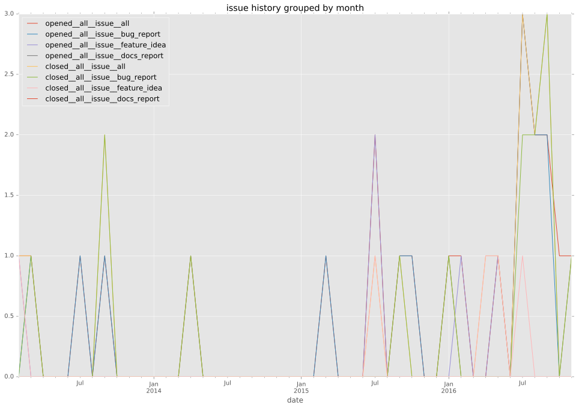

authors
maintainers
- ansible
contributors
- senk : 1 commits
- lostick : 1 commits
- gundalow : 1 commits
- mscherer : 3 commits
- runcom : 3 commits
- bcoca : 25 commits
total issue counts
unknown: 1
bugfix pull request: 1
pullrequest: 6
docs pull request: 3
feature pull request: 1
feature idea: 3
issue: 18
new plugin: 1
bug report: 14
issue history

pullrequest history

days open by issue type
feature pull request
count: 2
std: 0.0
min: 55
max: 55
median: 55.0
mean: 55.0
all
count: 29
std: 70.7196295936
min: 0
max: 375
median: 1.0
mean: 23.1379310345
pullrequest
count: 0
std: nan
min: nan
max: nan
median: nan
mean: nan
docs pull request
count: 6
std: 0.516397779494
min: 0
max: 1
median: 0.0
mean: 0.333333333333
bugfix pull request
count: 2
std: 0.0
min: 5
max: 5
median: 5.0
mean: 5.0
feature idea
count: 3
std: 211.501773042
min: 0
max: 375
median: 18.0
mean: 131.0
issue
count: 0
std: nan
min: nan
max: nan
median: nan
mean: nan
new plugin
count: 2
std: 0.0
min: 9
max: 9
median: 9.0
mean: 9.0
bug report
count: 13
std: 23.9497336852
min: 0
max: 65
median: 0.0
mean: 10.6153846154
closures grouped by total days open